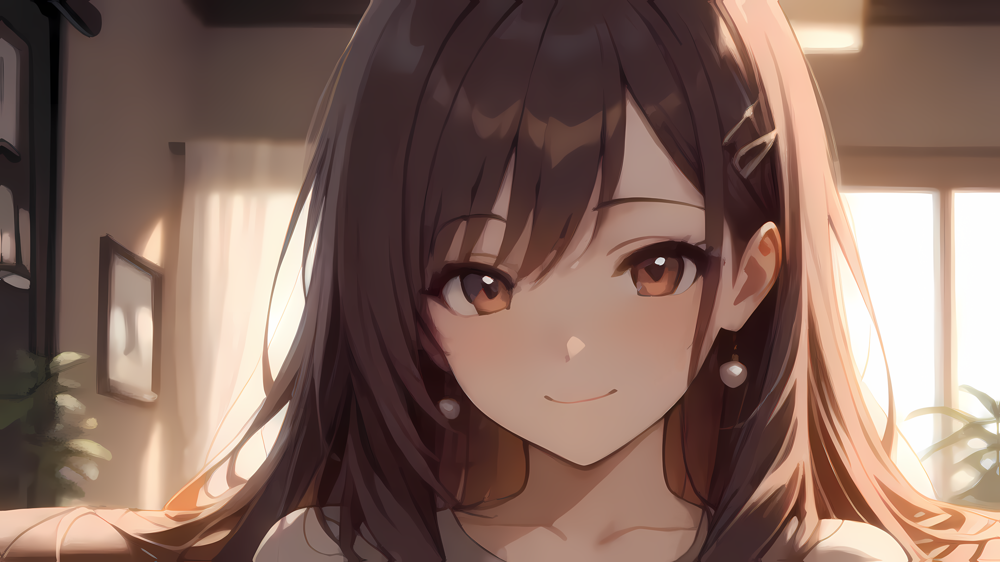

A Workflow for Extreme Anime Upscaling
and an Example of 170x Resolution Increase
and an Example of 170x Resolution Increase
Consider the problem of upscaling, namely increasing the width and height of a picture by a given factor. A modern solution is to use an AI model of the SSR family. During training, the model is shown a picture and a shrunk version of it, in a setting where the former is intended as the expected output of the second. This step is performed many times using a large collection of pictures, and lets the model learn how to upscale.
It is standard practice to train SSR for upscaling by a fixed power of two (say k), but users usually need a specific output/input ratio (say h). This is why in practice the SSR is run ⌈log k (h)⌉ times, and then, if log k (h) is not an integer, a downscale using a traditional algorithm such as bicubic or lanczos is performed.
Each SSR works best for a specific level of realism (reality, anime, semirealism, ...) and pixelation (the size of a pixel at the expected print size). In the first case, it is because each model works best on the type of images it was trained on. In the second case, it is because each model has its own notion of what is a detail to be enhanced, and what has to be seen as an artifact due to downscaling, compression, conversion, and so on. And this, in turn, depends on whether training's shrinking is a high quality downscaling algorithm or one deliberately introducing the aforementioned distortions.
Recently, I stumbled upon an anime picture which I wanted to turn into a wallpaper. The picture was vertical, and after a vertical crop in order to enforce a 16:9 ratio, I got this 289 x 162 px picture:
It is standard practice to train SSR for upscaling by a fixed power of two (say k), but users usually need a specific output/input ratio (say h). This is why in practice the SSR is run ⌈log k (h)⌉ times, and then, if log k (h) is not an integer, a downscale using a traditional algorithm such as bicubic or lanczos is performed.
Each SSR works best for a specific level of realism (reality, anime, semirealism, ...) and pixelation (the size of a pixel at the expected print size). In the first case, it is because each model works best on the type of images it was trained on. In the second case, it is because each model has its own notion of what is a detail to be enhanced, and what has to be seen as an artifact due to downscaling, compression, conversion, and so on. And this, in turn, depends on whether training's shrinking is a high quality downscaling algorithm or one deliberately introducing the aforementioned distortions.
Recently, I stumbled upon an anime picture which I wanted to turn into a wallpaper. The picture was vertical, and after a vertical crop in order to enforce a 16:9 ratio, I got this 289 x 162 px picture:
Original picture (289 x 162 px)
My screen's resolution is 3840 x 2160 px (commonly called 4K), an area approximately 177 times larger than the picture's. Thus, my first attempt has been to use the SSR Real-ESRGAN 4xPlus Anime 6B which is suited for highly pixelated anime pictures. As its name suggests, its scaling factor is 4, so I run it twice for a x16 upscaling effect, and then downscaled the output to 4k using a bicubic algorithm:

Trivial upscaling (3840 x 2160 px)
I was not satisfied with this attempt, as the result lacked the sensation of softness and warmth of the original picture. Then, I embarked on a small journey attempting to get the desired result with very little knowledge of digital photography. My intuition was that a proper sequence of applications of this SSR, a second more conservative one, and a downscaling algorithm could yield a satisfying upscaling. I put this intuition into practice successfully, using the general-purpose UpScayl High Fidelity as second SSR and a bicubic algorithm for downscaling:

Smart upscaling (3840 x 2160 px)
I also applied some minor manual corrections using a smudging tool. This step is almost unavoidable when confronting high pixelation with SSR, because some details of the original picture have deteriorated to a point where they have enough consistency to not be recognized as artifacts, but, at the same time, they do not carry enough information for a truthful reconstruction to be possible:

Smart upscaling - Polished (3840 x 2160 px)
In the perspective of proceeding in a more general setting, let us call Real-ESRGAN 4xPlus Anime 6B strong upscaling x4, UpScayl High Fidelity conservative upscaling x4, and bicubic downscaling to W x H px dowscaling W x H. The presented workflow, smudging excluded, can be described as the following simple algorithm:
Input ➝ 289 x 162 px picture
Code ➝
1. conservative upscaling x4
2. conservative upscaling x4
3. downscaling 3840 x 2160
4. conservative upscaling x4
5. downscaling 1920 x 1080
6. strong upscaling x4
7. downscaling 1920 x 1080
8. strong upscaling x4
9. downscaling 3840 x 2160
Code ➝
1. conservative upscaling x4
2. conservative upscaling x4
3. downscaling 3840 x 2160
4. conservative upscaling x4
5. downscaling 1920 x 1080
6. strong upscaling x4
7. downscaling 1920 x 1080
8. strong upscaling x4
9. downscaling 3840 x 2160
The idea is to use conservative upscaling just as needed to surpass 3840 x 2160 px (steps 1-2), then doing it further as much as
hardware and and processing time allow (steps 3-4), then to let strong upscaling reconstruct details (steps 5-6), then doing it
further as long as softness and warmth are not compromised (steps 7-8), and finally resizing to the desired output size (step 9). The intermediate format 1920 x 1080 px sets the threshold of what is considered an
artifact and what a feature.
The algorithm is easily generalized to a parametric one: repeating steps 3-4 safely improves detail (and considerably increases processing time), while repeating steps 7-8 further improves detail at the expense of softness and warmth (and slightly increases processing time); also, any picture of 16:9 ratio can be taken into account:
The algorithm is easily generalized to a parametric one: repeating steps 3-4 safely improves detail (and considerably increases processing time), while repeating steps 7-8 further improves detail at the expense of softness and warmth (and slightly increases processing time); also, any picture of 16:9 ratio can be taken into account:
Input ➝ 16:9 picture
Parameters ➝
c : integer >= 0 # conservative effort
s : integer >= 0 # strong effort
Code ➝
1. for [ ⌈log 4 (3840 / width)⌉ ] times ➝ conservative upscaling x4
2. for [ c ] times ➝ downscaling 3840 x 1920; conservative upscaling x4
3. for [1 + s ] times ➝ downscaling 1920 x 1080; strong upscaling x4
4. downscaling 3840 x 2160
Parameters ➝
c : integer >= 0 # conservative effort
s : integer >= 0 # strong effort
Code ➝
1. for [ ⌈log 4 (3840 / width)⌉ ] times ➝ conservative upscaling x4
2. for [ c ] times ➝ downscaling 3840 x 1920; conservative upscaling x4
3. for [1 + s ] times ➝ downscaling 1920 x 1080; strong upscaling x4
4. downscaling 3840 x 2160
Steps 1, 2, 3 and 4 correspond to the old steps 1-2, 3-4, 5-8 and 9 respectively. Now it is natural to generalize further: the input could be of any size, the overall scaling factor could be different, and finally, it could be desirable to early neutralize upscalings already existing in the input picture through downscaling, in order to normalize its artifact / feature treshold:
Input ➝ w x h px picture
Parameters ➝
u : real >= 1 # upscaling factor
d : real >= 1 # downscaling factor
c : integer >= 0 # conservative effort
s : integer >= 0 # strong effort
Code ➝
1. downscaling ⌊w / d⌋ ⌊h / d⌋
2. for [ ⌈log 4 (u * d)⌉ ] times ➝ conservative upscaling x4
3. for [ c ] times ➝ downscaling ⌊w * u⌋ x ⌊h * u⌋; conservative upscaling x4
4. for [ 1 + s ] times ➝ downscaling ⌊w * u / 2⌋ x ⌊h * u / 2⌋ ; strong upscaling x4
5. downscaling ⌊w * u⌋ x ⌊h * u⌋
Parameters ➝
u : real >= 1 # upscaling factor
d : real >= 1 # downscaling factor
c : integer >= 0 # conservative effort
s : integer >= 0 # strong effort
Code ➝
1. downscaling ⌊w / d⌋ ⌊h / d⌋
2. for [ ⌈log 4 (u * d)⌉ ] times ➝ conservative upscaling x4
3. for [ c ] times ➝ downscaling ⌊w * u⌋ x ⌊h * u⌋; conservative upscaling x4
4. for [ 1 + s ] times ➝ downscaling ⌊w * u / 2⌋ x ⌊h * u / 2⌋ ; strong upscaling x4
5. downscaling ⌊w * u⌋ x ⌊h * u⌋
The behavior of the original algorithm can be reproduced by this generalized algorithm by setting u = 13.29, d = 1, c = 1, s = 1. In order to use the conservative and strong SSR of your choice, two edits are needed. Let k1 and k2 be their respective scaling factors. Then, change log 4 at line 1 to log k1, and 1/2 at line 4 to a number between 1/k2 and 1. The latter has to found by manual tuning aimed at maximizing output quality.
If the last algorithm is run as it is, the area in pixels of the largest intermediate picture is A = w * h * u ^ 2 * 16, and you will need approximately 0.5 + A * 0.35 / 10 ^ 6 GB of VRAM to run it. For example, the initial workflow would require more or less 40 GB of VRAM. Every upscaling GUI applies a technique called tiling in order to lower the VRAM requirement, which consists in tiling the input picture and working on each tile separately. You should do the same if you decide to implement the algorithm by yourself.
I used the GUI Upscayl to run the SSR, and the image editor GIMP for downscaling and smudging. They are available for Ubuntu, Windows, and MacOS.
If the last algorithm is run as it is, the area in pixels of the largest intermediate picture is A = w * h * u ^ 2 * 16, and you will need approximately 0.5 + A * 0.35 / 10 ^ 6 GB of VRAM to run it. For example, the initial workflow would require more or less 40 GB of VRAM. Every upscaling GUI applies a technique called tiling in order to lower the VRAM requirement, which consists in tiling the input picture and working on each tile separately. You should do the same if you decide to implement the algorithm by yourself.
I used the GUI Upscayl to run the SSR, and the image editor GIMP for downscaling and smudging. They are available for Ubuntu, Windows, and MacOS.
Thank you for your attention, feel free to email me for questions and/or suggestions at michele.bizzoca@pm.me!